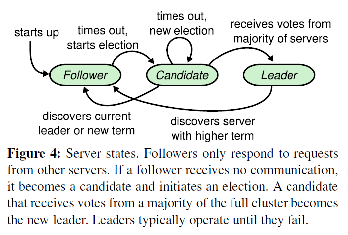
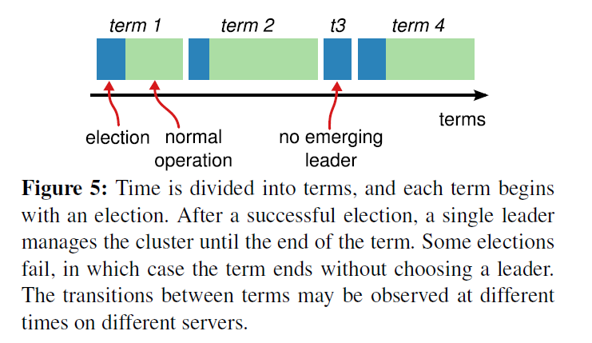
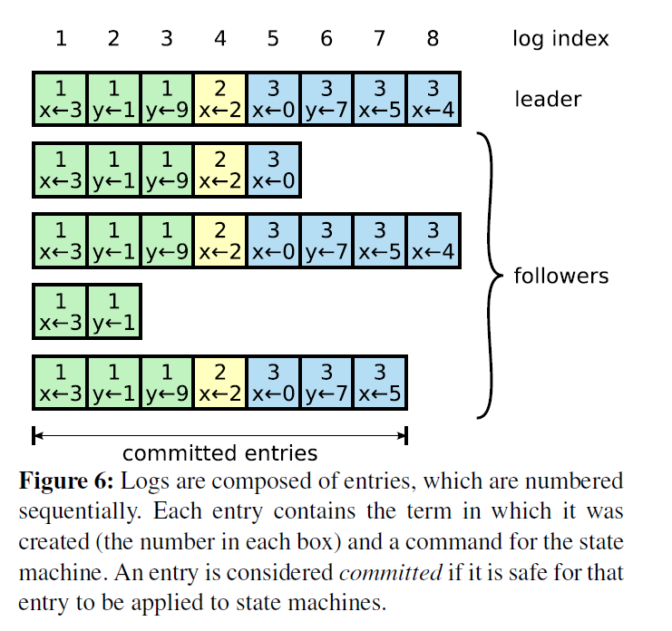
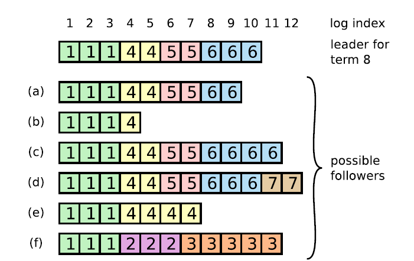
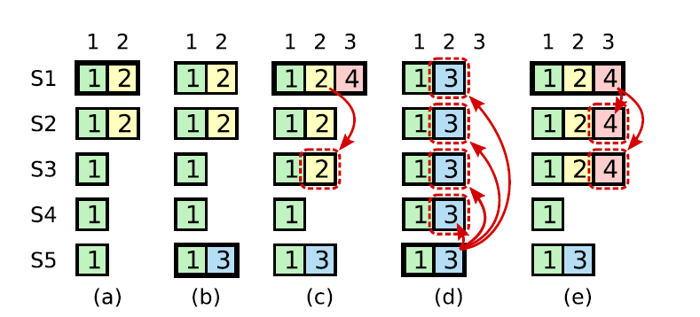
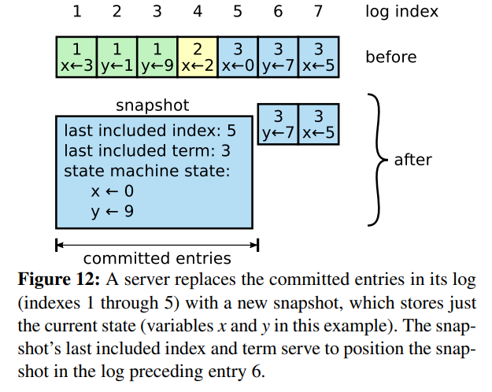
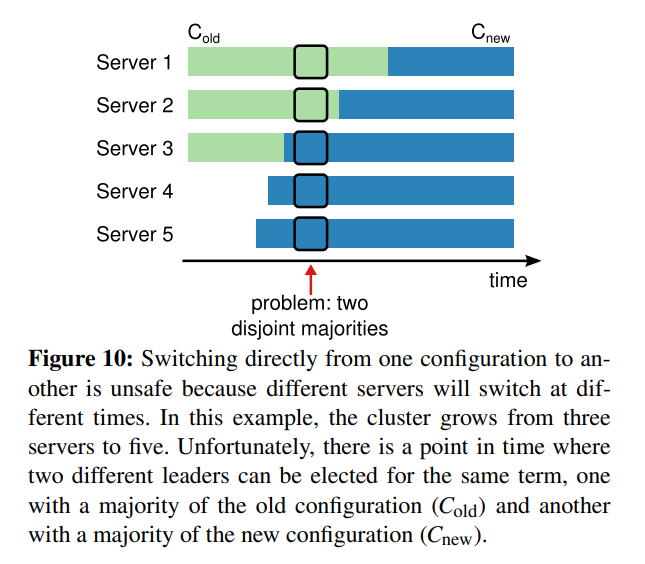

CAP原则又称CAP定理[2000]，指的是在一个分布式系统中，一致性（Consistency）、可用性（Availability）、分区容错性（Partition tolerance）。CAP 原则指的是，这三个要素最多只能同时实现两点，不可能三者兼顾。
一致性：多个数据副本之间数据能否保持一致。
可用性：读写操作在单台服务器出问题后，在其他服务器上依然能够完成读写操作。
分区容错性：单台服务器，或多台服务器出问题（主要是网络问题）后，正常服务的服务器依然能正常提供服务，并且满足设计好的一致性和可用性。
BASE理论是Basically Available(基本可用)，Soft State（软状态）和Eventually Consistent（最终一致性）三个短语的缩写。
最终一致性（Eventually Consistent）：最终一致性是强调系统中所有的数据副本，在经过一段时间的同步之后，最终能够达到一直的状态。即没有保证实时的数据一致。
Raft算法为了保证高可用，并不是强一致性，而是最终一致性。
1.分布式一致性算法
Paxos
Raft：Raft more understandable than Paxos and also provides a better foundation for building practical systems
ZAB
一、Raft算法概述
Raft是工程上使用较为广泛的强一致性、去中心化、高可用的分布式协议。raft是一个共识算法（consensus algorithm），所谓共识，就是多个节点对某个事情达成一致的看法。
它将分布式一致性分解为多个子问题：Leader选举（Leader election）、日志复制（Log replication）、安全性（Safety）、日志压缩（Log compaction）等
Leader：接受客户端请求，并向Follower同步请求日志，当日志同步到大多数节点上后告诉Follower提交日志。
Follower：接受并持久化Leader同步的日志，在Leader告之日志可以提交之后，提交日志。
Candidate：Leader选举过程中的临时角色

可以看出所有节点启动时都是Follower状态；在一段时间内如果没有收到来自leader的心跳，从Follower切换到candidate，发起选举；如果收到majority的造成票（含自己的一票）则切换到leader状态；如果发现其他节点比自己更新，则主动切换到Follower。
Raft 算法将时间划分成为任意不同长度的任期（Term）。任期用连续的数字进行表示。每一个任期的开始都是一次选举（election），一个或多个候选人会试图成为领导人。如果一个候选人赢得了选举，它就会在该任期的剩余时间担任领导人。在某些情况下，选票会被瓜分，有可能没有选出领导人，那么，将会开始另一个任期，并且立刻开始下一次选举。Raft 算法保证在给定的一个任期最多只有一个领导人。
Term：
Term（任期）以选举（Election）开始，然后就是一段或长或短的稳定工作期（normal Operation）

二、Leader选举
每个节点都会有一个 ElectionTimeout 计时，如果该节点在该时间内没有收到来自 Leader 或者其他Node 的信息，那么该节点就会发起选举。
- 增加节点本地的 current term，切换到candidate状态
- 投自己一票
- 并行给其他节点发送 RequestVote RPCs
等待其他节点的回复
在这个过程中，根据来自其他节点的消息，可能出现三种结果
- 收到majority的投票（含自己的一票），则赢得选举，成为Leader
- 收到了Leader的消息，表示有其它服务器已经抢先当选了Leader；
- 一段时间内没有收到majority投票，则保持Candidate状态，重新发出选举。
三、日志复制（保证数据一致性）
当选Leader 之后 就会调用 AppendEntriesRPC 将发送 no-op Log
客户端收到的请求之后 Leader把请求作为日志条目（Log entries）加入到它的日志中，然后并行的向其他服务器发起 AppendEntries RPC复制日志条目.
- Leader 追加日志条目
- Leader 发送AppendEntries RPC
- Leader 等待多数人回应
- Leader 将条目应用到状态机
- Leader 回复 Client
- Leader 通知 Follower 申请日志
日志由有序编号（log index）的日志item组成。每个日志条目包含它被创建时的任期号（term）和用于状态机执行的命令。如果一个日志条目被复制到大多数服务器上，就被认为可以提交（commit）了。

提交的日志都将通过状态机持久化到磁盘中
日志的一致性

复制时保证数据一致
- 如果不同日志中的两个条目有着相同的索引和任期号，则它们所存储的命令是相同的（原因：leader 最多在一个任期里的一个日志索引位置创建一条日志条目，日志条目在日志的位置从来不会改变）。
- 如果不同日志中的两个条目有着相同的索引和任期号，则它们之前的所有条目都是完全一样的（原因：每次 RPC 发送附加日志时，leader 会把这条日志条目的前面的日志的下标和任期号一起发送给 Follower，如果 Follower 发现和自己的日志不匹配，那么就拒绝接受这条日志，这个称之为一致性检查）。
Leader崩溃导致数据不一致.
一个Follower可能会丢失掉Leader上的一些条目，也有可能包含一些Leader没有的条目，也有可能两者都会发生。丢失的或者多出来的条目可能会持续多个任期。
- Leader通过强制Followers复制它的日志来处理日志的不一致，Followers上的不一致的日志会被Leader的日志覆盖。Leader为了使Followers的日志同自己的一致，Leader需要找到Followers同它的日志一致的地方，然后覆盖Followers在该位置之后的条目。
- 具体的操作是：Leader会从后往前试，每次 AppendEntries 失败后尝试前一个日志条目，直到成功找到每个Follower的日志一致位置点（基于上述的两条保证），然后向后逐条覆盖Followers在该位置之后的条目。
Replicated 状态机
一致性算法都会涉及到状态机，而状态机保证系统从一个一致的状态开始，以相同的顺序执行一些列指令最终会达到另一个一致的状态。
四、安全性

- 拥有最新的已提交的log entry的Follower才有资格成为leader。
- Leader只能推进commit index来提交当前term的已经复制到大多数服务器上的日志，旧term日志的提交要等到提交当前term的日志来间接提交（log index 小于 commit index的日志被间接提交）。
五、日志压缩

在实际的系统中，不能让日志无限增长，否则系统重启时需要花很长的时间进行回放，从而影响可用性。Raft采用对整个系统进行snapshot来解决，snapshot之前的日志都可以丢弃（以前的数据已经落盘了）。每个副本独立的对自己的系统状态进行snapshot，并且只能对已经提交的日志记录进行snapshot。
【Snapshot中包含以下内容】：
- 日志元数据，最后一条已提交的 log entry的 log index和term。这两个值在snapshot之后的第一条log entry的AppendEntries RPC的完整性检查的时候会被用上。
- 系统当前状态。
当Leader要发给某个日志落后太多的Follower的log entry被丢弃，Leader会将snapshot发给Follower。或者当新加进一台机器时，也会发送snapshot给它。发送snapshot使用InstalledSnapshot RPC
做snapshot既不要做的太频繁，否则消耗磁盘带宽， 也不要做的太不频繁，否则一旦节点重启需要回放大量日志，影响可用性。推荐当日志达到某个固定的大小做一次snapshot。
做一次snapshot可能耗时过长，会影响正常日志同步。可以通过使用copy-on-write技术避免snapshot过程影响正常日志同步。
六、成员变更

我们先将成员变更请求当成普通的写请求，由领导者得到多数节点响应后，每个节点提交成员变更日志，将从旧成员配置（$C{old}$）切换到新成员配置（$C{new}$)。但每个节点提交成员变更日志的时刻可能不同，这将造成各个服务器切换配置的时刻也不同，这就有可能选出两个领导者，破坏安全性。
考虑以下这种情况：集群配额从 3 台机器变成了 5 台，可能存在这样的一个时间点，两个不同的领导者在同一个任期里都可以被选举成功（双主问题），一个是通过旧的配置，一个通过新的配置。简而言之，成员变更存在的问题是增加或者减少的成员太多了，导致旧成员组和新成员组没有交集，因此出现了双主节点.
Raft解决方法是每次成员变更只允许增加或删除一个成员（如果要变更多个成员，连续变更多次）。
RPC.
在上述 我们有三种 RPC 请求.
RequestVoteRPC : 候选人发送投票请求.
AppendEntriesRPC: 日志复制. 包括了 no-op (刚成为Leader). 普通的Entries 如(CURD).成员变更的信息.
InstallSnapshotRPC: 通过快照给落后的Follower. 或者时刚来的Follower.
参考:
RAFT算法详解_青萍之末的博客-CSDN博客_raft算法
In Search of an Understandable Consensus Algorithm (raft.github.io)